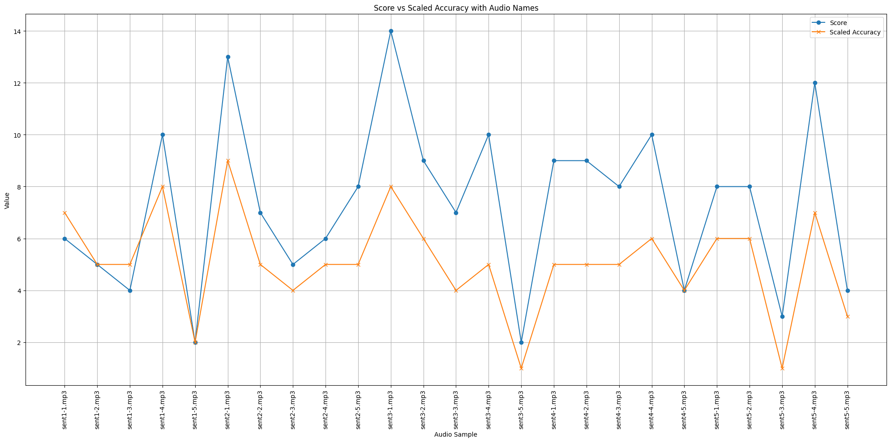

- The
eiproject includes several scripts, algorithms, and metrics to score elicited imitation.
Metrics:
Needleman-Wunsch algorithm
- To be documented.
Sentence Transformers
- To be documented.
Edit Distance
- To be documented.
Automatic Speech Recognition:
- To be documented.
EI User Interface:
Some Results:
